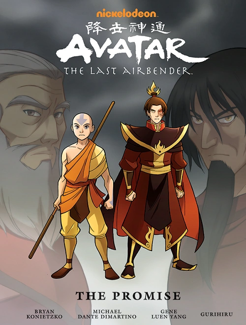
La Promesa
2012 · Trilogía
El entrenamiento de Aang atraviesa tres naciones y tres maestros. Elegí un libro para ir directo a su historia.
La historia sigue a un maestro aire de doce años llamado Aang, quien es descubierto congelado en un iceberg por dos jóvenes hermanos de la Tribu Agua del Sur: Katara y Sokka.
La Tribu Agua del Sur ha tenido una historia llena de acontecimientos y ha visto tiempos de prosperidad y libertad, así como de decadencia y genocidio: tenía una cultura y un estilo de Agua Control únicos, pero después de una serie de brutales incursiones de la Nación del Fuego, el Polo Sur quedó devastado y casi todos los Maestros Agua supervivientes fueron hechos prisioneros. Al momento de la llegada de Aang, la tribu estaba al borde de la extinción.
Después de un breve periodo de tiempo tras el cual descubren que él es el Avatar, la única persona que puede dominar las cuatro Artes de Control y poner fin a la devastadora guerra iniciada por la Nación del Fuego después de que el Avatar Roku desapareciera hacía cien años, ellos se dirigen a la Tribu Agua del Norte, donde Aang y Katara, la última maestra agua de la tribu del sur, podrían encontrar un maestro del Agua Control que les enseñara.
A lo largo de su viaje, ellos son perseguidos por Zuko, el príncipe desterrado de la Nación del Fuego.
Después de dejar el Polo Norte y dominar el Agua Control, Aang viaja al Reino Tierra para dominar la Tierra Control. Allí, el grupo conoce a Toph, una joven ciega de una familia bien acomodada… y experta en patear traseros con su tierra control. Eso sí, en secreto.
Los héroes descubren información sobre un próximo eclipse solar que dejaría a la Nación del Fuego impotente y abierta a la invasión. Luchan por alcanzar al Rey Tierra con esta información vital, pero son desviados cuando Appa es secuestrado. El psicológicamente atormentado Zuko es perseguido por su hermana Azula y sus dos amigas Mai y Ty Lee, al igual que el Equipo Avatar, en su lucha por llegar a Ba Sing Se.
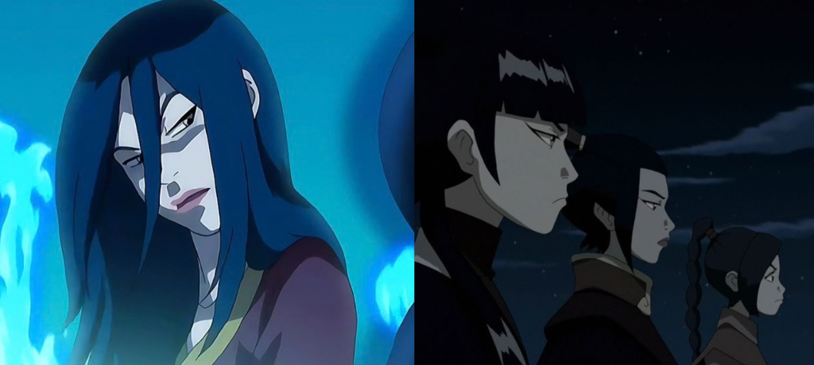
Azula logra ingeniar un golpe desde dentro que derrocaría al Rey Tierra y destruye cualquier esperanza de una invasión a gran escala de la Nación del Fuego.
Tras sobrevivir a la terrible batalla de Ba Sing Se, Aang se enfrenta a nuevos desafíos mientras él y sus amigos se adentran en secreto en la Nación del Fuego. Su misión es encontrar y derrotar al Señor del Fuego Ozai.
En el camino, descubren que Ozai tiene sus propios planes. El líder de la Nación del Fuego pretende usar el inmenso poder del cometa de Sozin para extender su dominio permanentemente por las cuatro naciones.
Con poco tiempo, Aang tiene mucho que aprender sobre el control de los elementos y ningún maestro que lo ayude. Sin embargo, sus amigos están ahí para ayudarlo, y encuentra aliados inesperados en la Nación del Fuego. Entre ellos, su nuevo amigo (y ex enemigo), Zuko.
Además, el universo de Avatar, que incluye también su secuela, La Leyenda de Korra, cuenta con 9 trilogías de cómics y novelas gráficas independientes (one-shots), cuyas historias continúan las aventuras de la serie animada o exploran relatos inéditos de personajes queridos.

2012 · Trilogía
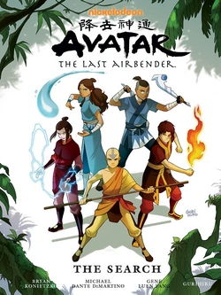
2013 · Trilogía
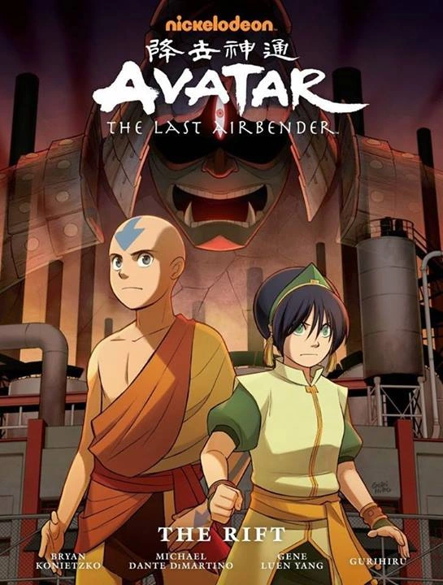
2014 · Trilogía
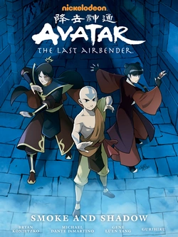
2015–16 · Trilogía
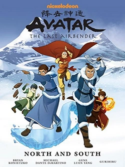
2016–17 · Trilogía
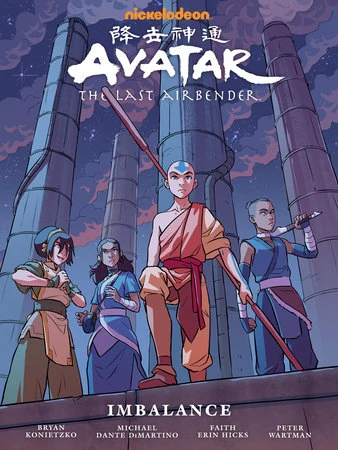
2018–19 · Trilogía
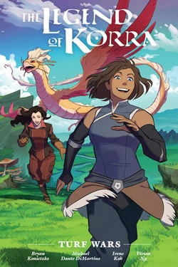
2017–18 · Korra
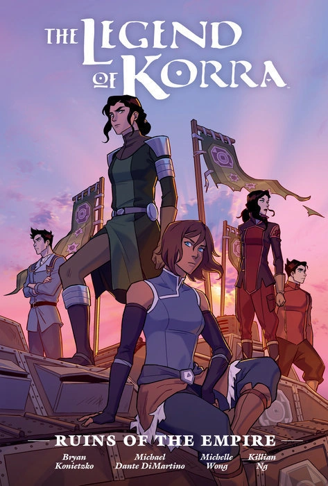
2019–20 · Korra
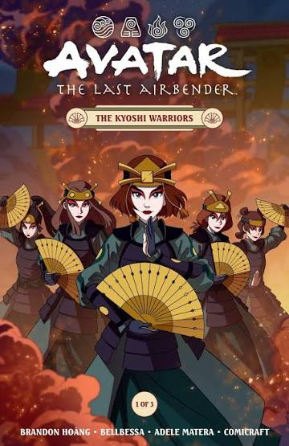
2021 · Trilogía
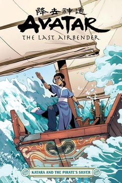
2020 · One-Shot
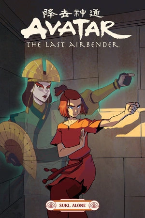
2021 · One-Shot
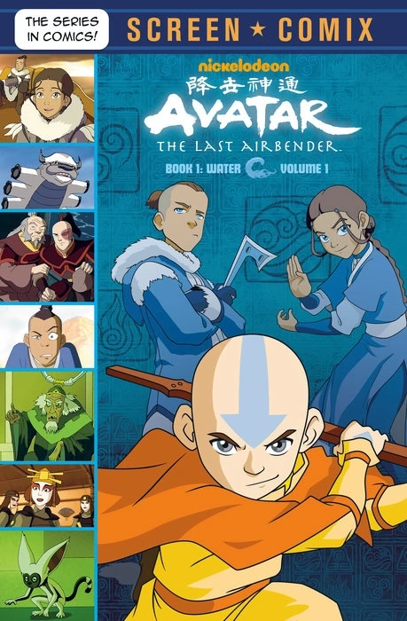
2021 · One-Shot
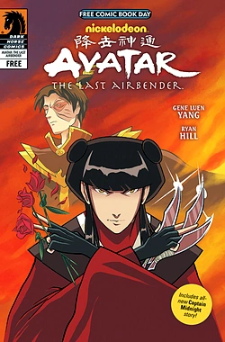
2021 · Korra One-Shot
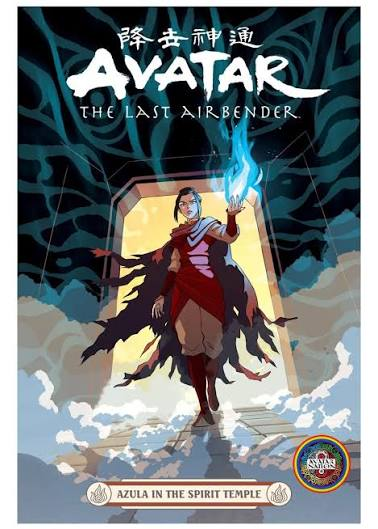
2023 · One-Shot
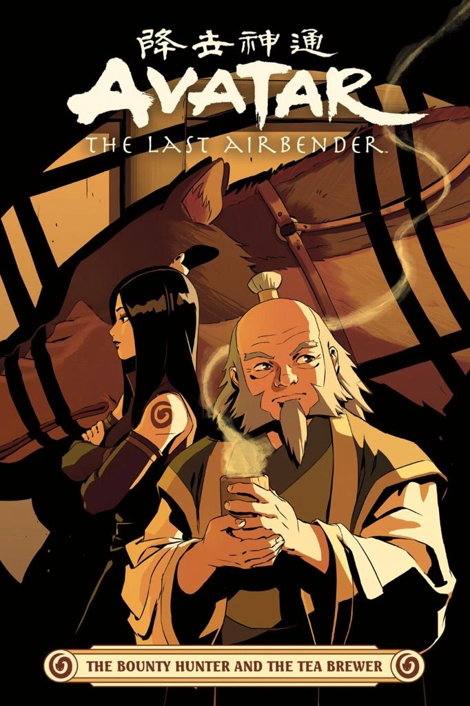
2024 · One-Shot
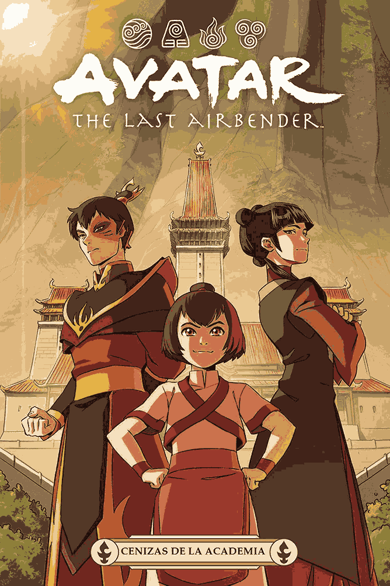
2024 · One-Shot
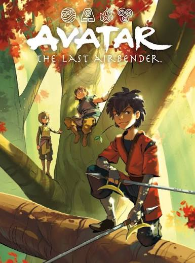
2025 · One-Shot
También tiene 6 juegos, un live action que, personalmente, prefiero olvidar que existe por completo; una secuela que sigue la historia de la sucesora de Aang, Korra (La Leyenda de Korra, 2012), y una película animada que muestra a nuestros queridos personajes de la primera serie, adultos y más musculosos que nunca.
En resumen, el universo de Avatar es inmensamente vasto, para todas las edades, divertido, emocionante, y por momentos incluso triste. Sobre todo, nos trae innumerables aventuras y una historia que nos enseña sobre amistad, familia, sobre un propósito compartido y sobre la búsqueda de un profundo cambio, por un grupo de niños que inspiran al mundo a través de aquello por lo que luchan: la paz entre las 4 naciones.
Por eso, si aún no la viste, ¡no sé qué estás esperando!